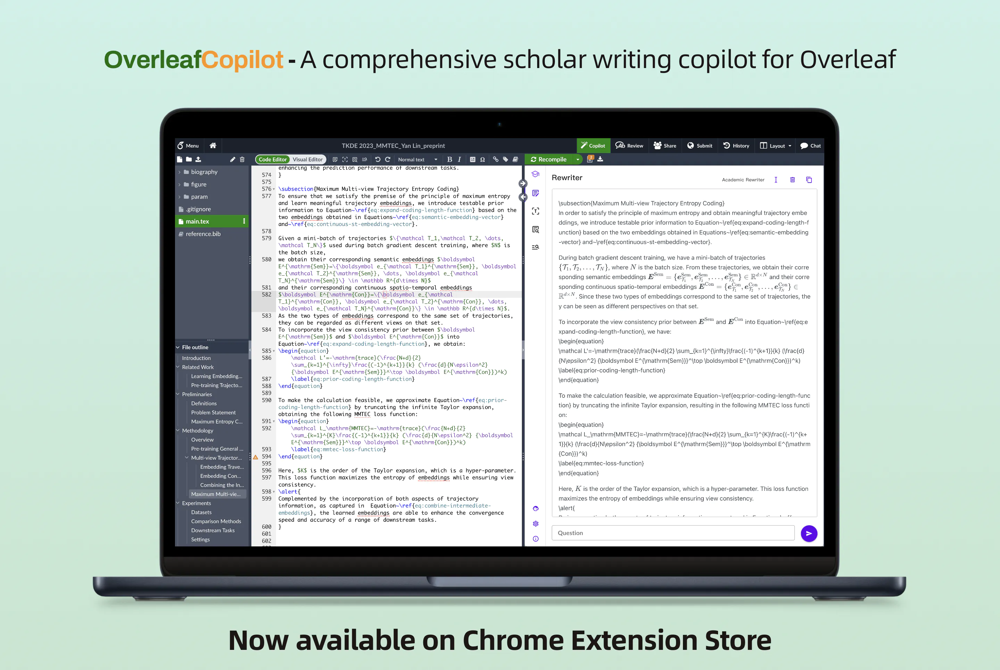

Prompt Genius
All-purpose prompts with hierarchical classification system and multi-language support.
Served 60k+ users for the past year. Serving 5k+ users per month.

Highway Toll Rate Optimization System
A traffic flow simulation system based on the designated toll rates.
Successfully utilized in the construction of Nansha Bridge in Guangdong Province.

Spatial-temporal Traffic Big Data Mining Platform
Integrated platform for lubricating the process of spatial-temporal traffic big data mining, including data pre-processing, storing and prediction.

Robust and Balanced Graph Partition Algorithm for Map Services
Co-developed with Tencent, a preliminary algorithm for efficient hierarchical routing on large-scale road networks.
面向稀疏性问题的时空轨迹生成与表示学习方法研究
National Natural Science Foundation of China general project (国家自然科学基金面上项目). Research on spatio-temporal trajectory generation and representation learning methods for sparsity problems.
面向交通预测的时空轨迹数据预训练表示学习方法研究
National Natural Science Foundation of China general project (国家自然科学基金面上项目). Research on pre-training representation learning method of spatiotemporal trajectory data for traffic prediction.
基于轨迹表示学习的用户出行目的地及行程时间预测
Basic scientific research project of Beijing Jiaotong University (北京交通大学基本科研研究项目). User travel destination and travel time prediction based on trajectory representation learning.
基于时空图神经网络的城市路网交通状态估计与预测
Enterprise commissioned research project. Urban road network traffic status estimation and prediction based on spatio-temporal graph neural network.
基于移动用户轨迹大数据的异常交通事件预测
Enterprise commissioned research project. Abnormal traffic event prediction based on mobile user trajectory big data.
航空配餐备份量动态预测算法研究
Enterprise commissioned research project. Predicting the airline catering backup quantity to help airline companies reduce economic and productivity losses.